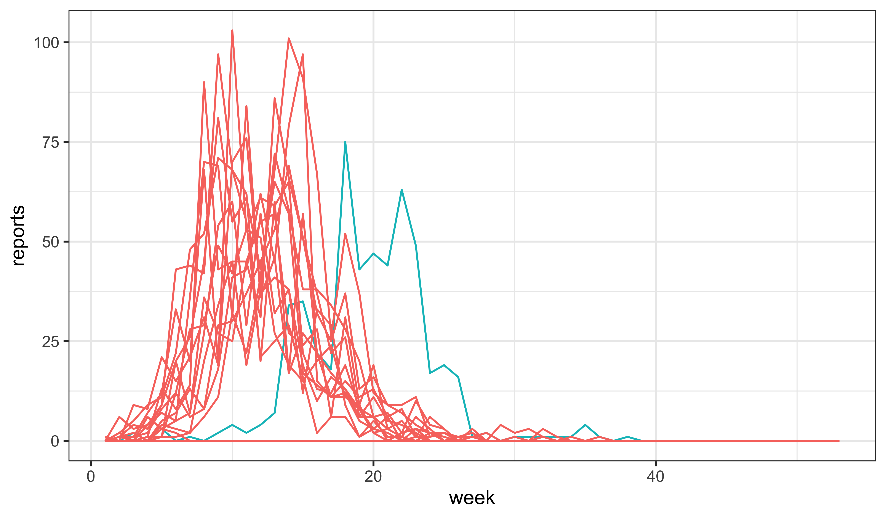
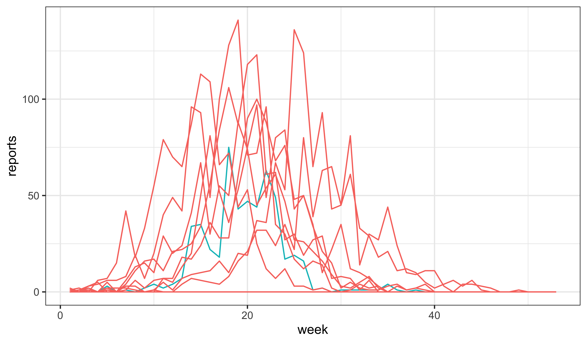

measSIR |>
simulate(params=c(Beta=25,mu_IR=0.5,rho=0.5,k=10,eta=0.03,N=38000),
nsim=20,format="data.frame",include.data=TRUE) |>
ggplot(aes(x=week,y=reports,group=.id,color=.id=="data"))+
geom_line()+
guides(color="none")
The R codes for this document are provided as a script.
We combine the equation \[f(x+\delta)=f(x)+\delta\,g(x)+o(\delta),\] with the definition that \(h(\delta)=o(\delta)\) means \(\lim_{\delta\to 0} \frac{h(\delta)}{\delta} = 0\). Rearranging, we see that \[\lim_{\delta\to 0} \frac{f(x+\delta)-f(x)}{\delta} = g(x)\] which, by definition, implies that \(df(x)/dx = g(x)\).
Little-o notation is compact, and so is useful for simplifying complex expressions.
For reasons explained in the lesson, scientific conclusions may not hinge on the extent to which numerical approximations agree with exact solutions of the equations defining a continuous-time model. For constant-rate compartmental models, the Gillespie algorithm gives an exact solution at the expense of additional computation time. We may on occastion want an exact simulator, and in that case Gillespie can be used.
In the simulated outbreaks, the overall incidence is much too low, and the outbreak dies out after only a few weeks. To attempt to simulate data for which the observed data is a more plausible realization, we might try increasing the force of infection.
measSIR |>
simulate(params=c(Beta=25,mu_IR=0.5,rho=0.5,k=10,eta=0.03,N=38000),
nsim=20,format="data.frame",include.data=TRUE) |>
ggplot(aes(x=week,y=reports,group=.id,color=.id=="data"))+
geom_line()+
guides(color="none")
Taking it farther….
measSIR |>
simulate(params=c(Beta=40,mu_IR=0.5,rho=0.5,k=10,eta=0.03,N=38000),
nsim=20,format="data.frame",include.data=TRUE) |>
ggplot(aes(x=week,y=reports,group=.id,color=.id=="data"))+
geom_line()+
guides(color="none")
While this increases the overall incidence, the epidemic is now peaking too quickly. To counteract this, we might try reducing the recovery rate.
measSIR |>
simulate(params=c(Beta=40,mu_IR=0.2,rho=0.5,k=10,eta=0.03,N=38000),
nsim=20,format="data.frame",include.data=TRUE) |>
ggplot(aes(x=week,y=reports,group=.id,color=.id=="data"))+
geom_line()+
guides(color="none")Additionally, we might have a look at the effects of changing the initial susceptible fraction, \(\eta\). Indeed, it seems that it is possible to get something not too awful to contemplate by just manipulating \(\eta\):
measSIR |>
simulate(params=c(Beta=15,mu_IR=0.5,rho=0.5,k=10,eta=0.06,N=38000),
nsim=20,format="data.frame",include.data=TRUE) |>
ggplot(aes(x=week,y=reports,group=.id,color=.id=="data"))+
geom_line()+
guides(color="none")When using Rstudio, turn off automatic save and restore of global workspace. By default, when you quit a session, R asks whether to save the global session to a hidden file, .RData, in the current working directory. Presumably because this behavior is annoying, Rstudio, by default, answers the “Do you want to save to .RData?” question for you, in the affirmative. Also by default, and with only an easily overlooked message in the startup banner, R loads such a file, re-establishing the workspace at the start of a session. Because the file is hidden, and the behavior is easy to forget about, this can lead to errors that are difficult to track down. [For example, situations where different results are obtained on different machines during a large parallel computation, despite all the code being precisely the same!] For these reasons, it’s best to put a stop to all of this skulduggery.
To do so, go to the “Tools” menu in Rstudio and select “Global Options”. Make sure the “Restore .RData into workspace at startup” box is unticked. For good measure, set the “Save workspace to .RData on exit” to “Never”.
If you ever do want to save your workspace, it’s as easy as save.image(file="<filename>.rda"); restoring the file is a matter of load("<filename>.rda"). When you do this, the file you create will be visible, as of course it should be since you gain nothing by hiding things from yourself!
The existing code may be modified as follows:
seir_step <- Csnippet("
double dN_SE = rbinom(S,1-exp(-Beta*I/N*dt));
double dN_EI = rbinom(E,1-exp(-mu_EI*dt));
double dN_IR = rbinom(I,1-exp(-mu_IR*dt));
S -= dN_SE;
E += dN_SE - dN_EI;
I += dN_EI - dN_IR;
R += dN_IR;
H += dN_IR;
")
seir_init <- Csnippet("
S = nearbyint(eta*N);
E = 0;
I = 1;
R = nearbyint((1-eta)*N);
H = 0;
")
measSIR |>
pomp(
rprocess=euler(seir_step,delta.t=1/7),
rinit=seir_init,
paramnames=c("N","Beta","mu_EI","mu_IR","rho","eta"),
statenames=c("S","E","I","R","H")
) -> measSEIRUsing the rough estimate that the latent period in measles is 8–10da, we take \(\mu_{EI}\sim 0.8\)wk-1 and \(\mu_{IR}\sim 1.3\)wk-1 (so as to have roughly the same generation time as before).
measSEIR |>
simulate(params=c(Beta=30,mu_EI=0.8,mu_IR=1.3,rho=0.5,k=10,eta=0.06,N=38000),
nsim=20,format="data.frame",include.data=TRUE) |>
ggplot(aes(x=week,y=reports,group=.id,color=.id=="data"))+
geom_line()+
guides(color="none")Again one can increase the force of infection:
measSEIR |>
simulate(params=c(Beta=40,mu_EI=0.8,mu_IR=1.3,rho=0.5,k=10,eta=0.06,N=38000),
nsim=20,format="data.frame",include.data=TRUE) |>
ggplot(aes(x=week,y=reports,group=.id,color=.id=="data"))+
geom_line()+
guides(color="none")